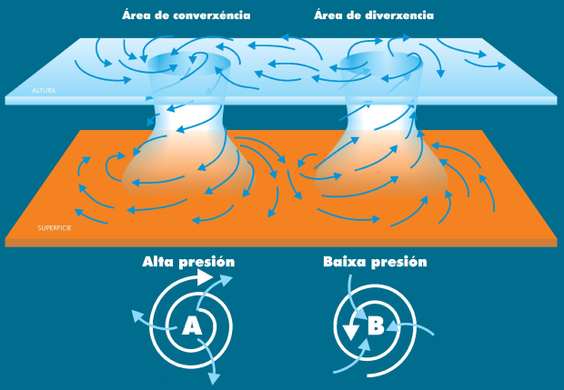
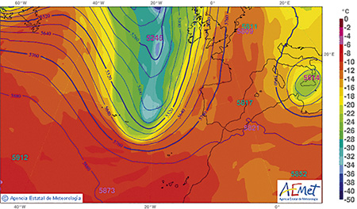
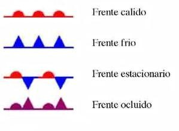
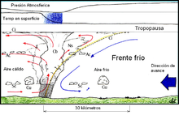
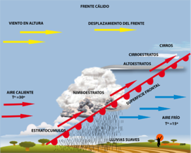
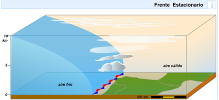
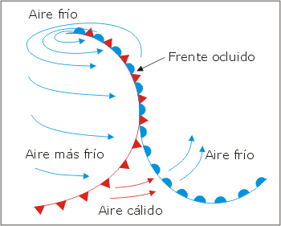
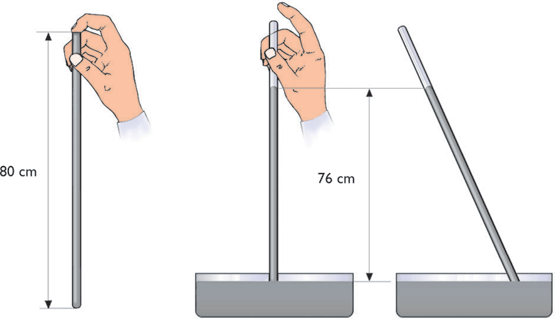

Contenido
Sistemas de presión atmosféricos
¿Por qué se forman?
Los sistemas de presión se forman porque el aire fluye siempre desde las áreas de altas presiones hacia áreas de bajas presiones, tratando de llegar a un equilibrio. Pero existe una fuerza que lo desvía, causada por la rotación de la Tierra, y que hace que el flujo no vaya en línea recta. En vez de esto, los vientos forman una espiral.
Los sistemas de presión se clasifican en fríos, cálidos y dinámicos según su estructura térmica:
DEPRESIÓN FRÍA
En la troposfera más baja el aire más frío se encuentra sobre el mínimo de presión del mapa de superficie. Las topografías relativas de 1.000 a 700 y de 1.000 a 500 hPa presentan un mínimo de espesor coincidiendo con el centro de la depresión fría.
ANTICICLÓN FRÍO
En los mapas de superficie, el anticiclón frío aparece con presiones en el centro del orden de 1.035 a 1.040 hPa y la circulación anticiclónica desaparece rápidamente en altura. Entre 850 y 500 hPa el aire frío está sujeto a una circulación ciclónica.
DEPRESIÓN CÁLIDA
La depresión cálida, típica de los continentes durante los meses de verano, es el resultado de un fuerte calentamiento en una región.
ANTICICLÓN CÁLIDO
El anticiclón cálido presenta circulación anticiclónica en todos los niveles. En toda la troposfera el aire más cálido se encuentra en el centro, mientras que en la estratosfera más baja aparece un mínimo de temperaturas sobre las presiones más altas de superficie. Es un anticiclón de movimiento lento.Es originado por subsidencia en la troposfera y movimiento vertical ascendente en la estratosfera más baja.
ANTICICLÓN DINÁMICO
El anticiclón dinámico es una anticiclón frío con un modelo de curva de nivel a 500 y a 300 mb que favorecen la anticiclogénesis. En el estado final el anticiclón dinámico se transforma en anticiclón cálido con su eje prácticamente vertical.
Los frentes y sus tipos
¿Qué son los frentes?
Es una línea que separa dos masas de aire de diferente temperatura. Se clasifican en cuatro tipos:
- Fríos
- Cálidos
- Estacionarios
- Ocluidos
FRENTE FRÍO:
Es una zona de inestabilidad que se produce cuando una masa de aire frío se choca con una de aire caliente. El aire frío al ser más denso entra por la parte baja del aire caliente, lo que puede provocar tormentas eléctricas, fuertes vientos y lluvias como hemos nombrado antes
FRENTE CÁLIDO:
Es una masa de aire caliente que choca con una masa de aire frío. Cuando pasa el aire caliente la temperatura y la humedad suben, además la presión baja.
FRENTE ESTACIONARIO:
Es el límite entre 2 masas de aire, en la cual las 2 son iguales y ninguna quita a la otra. Pueden pasar varias condiciones meteorológicas, pero las más frecuentes son lluvias y nubes. Tras varios días se convierten en uno de los 2 tipos de frentes. Estos frentes son muy típicos de veranos y son los provocantes de las “tormentas de verano” que acaban en inundaciones.
FRENTE OCLUIDO:
Se forman cuando una masa de aire caliente es adelantada por una de aire frío, el de aire frío lo empuja hacia arriba y son empujados el uno al otro constantemente. Estos frentes provocan nubes y lluvia ligera.
Ecuación y experimento de Torricelli
Todos los problemas de presión atmosférica derivan de esta fórmula
$$ p = d · g · h$$
Esta fórmula hizo que funcionara el experimento de Torricelli.
Se intentó medir la presión que ejerce el aire sobre la superficie de la tierra. Se pensó en aplicar la ley fundamental de la hidrostática, pero no se puede utilizar en este caso debido a que la densidad del aire no es constante en la atmósfera.
El primero en determinar el valor de la presión atmosférica en la superficie fue Torricelli en 1643.
El experimento de Torricelli
El experimento consistió en llenar un tubo de vidrio con mercurio, tapando la boca del tubo e invirtiéndolo, sumergiendo así la boca en un recipiente lleno de mercurio.
Cuando quitó el dedo de la boca del tubo, observó que quedaron 760 mm de mercurio. Explicó el fenómeno proponiendo que la presión de la atmósfera igualaba la presión ejercida por la columna de mercurio.
Entonces, calculando la presión del mercurio a una profundidad de 760 mm, obtendríamos la presión que ejerce el aire.
Sabiendo que la densidad del mercurio es $$13,6 {g\over cm^3}$$
$$ p_{atm} = d_{Hg} · g · h = 13600 · 9.8 · 0.760 = 101325 Pa $$
Esta es la presión atmosférica en un día de condiciones meteorológicas normales y a nivel del mar.
Logros

Logros alcanzados por Microsoft.
| Año | Acontecimiento |
|---|---|
| 1983 | Bill Gates anuncia Microsoft Windows el 10 de noviembre de 1983. |
| 1985 | Microsoft Windows 1.0 se presentó el 20 de noviembre de 1985 y se vende inicialmente por $ 100.00. |
| 1987 | Microsoft Windows 2.0 fue lanzado el 9 de diciembre de 1987 y se vende inicialmente por $ 100.00. |
| 1987 | Microsoft Windows 386 se presenta el 9 de diciembre de 1987 y se vende inicialmente por $ 100.00. |
| 1988 | Microsoft Windows 286 se presenta en junio de 1988 y se vende inicialmente por $ 100.00. |
| 1990 | Microsoft Windows 3.0 fue lanzado el 22 de mayo de 1990. La versión completa de Microsoft Windows 3.0 tenía un precio de $ 149.95 y la versión de actualización tenía un precio de $ 79.95. |
| 1991 | Tras su decisión de no desarrollar sistemas operativos en colaboración con IBM, Microsoft cambia el nombre de OS / 2 a Windows NT. |
| 1991 | Microsoft Windows 3.0 o Windows 3.0a con multimedia fue lanzado en octubre de 1991. |
| 1992 | Microsoft Windows 3.1 fue lanzado en abril de 1992 y vende más de un millón de copias en los primeros dos meses de su lanzamiento. |
| 1992 | Microsoft Windows for Workgroups 3.1 fue lanzado en octubre de 1992. |
| 1993 | Microsoft Windows NT 3.1 fue lanzado el 27 de julio de 1993. |
| 1993 | Microsoft Windows 3.11, una actualización de Windows 3.1 se lanza el 31 de diciembre de 1993. |
| 1993 | El número de usuarios con licencia de Microsoft Windows ahora asciende a más de 25 millones. |
| 1994 | Microsoft Windows for Workgroups 3.11 fue lanzado en febrero de 1994. |
| 1994 | Microsoft Windows NT 3.5 fue lanzado el 21 de septiembre de 1994. |
| 1995 | Microsoft Windows NT 3.51 fue lanzado el 30 de mayo de 1995. |
| 1995 | Microsoft Windows 95 fue lanzado el 24 de agosto de 1995 y vende más de un millón de copias en 4 días. |
| 1996 | El Service Pack 1 de Microsoft Windows 95 (4.00.950A) se lanzó el 14 de febrero de 1996. |
| 1996 | Microsoft Windows NT 4.0 fue lanzado el 29 de julio de 1996. |
| 1996 | Microsoft Windows 95 (4.00.950B) también conocido como OSR2 con soporte FAT32 y MMX es lanzado el 24 de agosto de 1996. |
| 1996 | Microsoft Windows CE 1.0 fue lanzado en noviembre de 1996. |
| 1997 | Microsoft Windows CE 2.0 fue lanzado en noviembre de 1997. |
| 1997 | Microsoft Windows 95 (4.00.950C) también conocido como OSR2.5 se lanzó el 26 de noviembre de 1997. |
| 1998 | Microsoft Windows 98 fue lanzado en junio de 1998. |
| 1998 | Microsoft Windows CE 2.1 fue lanzado en julio de 1998. |
| 1998 | En octubre de 1998, Microsoft anunció que las versiones futuras de Windows NT ya no tendrían las iniciales de NT y que la próxima edición sería Windows 2000. |
| 1999 | Microsoft Windows 98 SE (Segunda edición) fue lanzado el 5 de mayo de 1999. |
| 1999 | Microsoft Windows CE 3.0 fue lanzado en 1999. |
| 2000 | El 4 de enero en el CES, Bill Gates anuncia que la nueva versión de Windows CE se llamará Pocket PC. |
| 2000 | Microsoft Windows 2000 fue lanzado el 17 de febrero de 2000. |
| 2000 | Microsoft Windows ME (Millennium) lanzado el 19 de junio de 2000. |
| 2001 | Microsoft Windows XP se lanza el 25 de octubre de 2001. |
| 2001 | La edición Microsoft Windows XP 64-Bit (Versión 2002) para sistemas Itanium se lanzó el 28 de marzo de 2003. |
| 2003 | Microsoft Windows Server 2003 is released March 28, 2003. |
| 2003 | Microsoft Windows Server 2003 se lanza el 28 de marzo de 2003. |
| 2003 | La edición de Microsoft Windows XP Media Center 2003 se lanzó el 18 de diciembre de 2003. |
| 2004 | La edición de Microsoft Windows XP Media Center 2005 se lanzó el 12 de octubre de 2004. |
| 2005 | La edición Microsoft Windows XP Professional x64 se lanzó el 24 de abril de 2005. |
| 2005 | Microsoft anuncia que su próximo sistema operativo, con nombre en código "Longhorn" se llamará Windows Vista el 23 de julio de 2005. |
| 2006 | Microsoft lanza Microsoft Windows Vista a las empresas el 30 de noviembre de 2006.td> |
| 2007 | Microsoft lanza Microsoft Windows Vista y Office 2007 al público en general el 30 de enero de 2007. |
| 2008 | Microsoft lanza Microsoft Windows Server 2008 al público el 27 de febrero de 2008. |
| 2009 | Microsoft lanza Windows 7 el 22 de octubre de 2009. |
| 2012 | Microsoft lanza Windows Server 2012 el 4 de septiembre de 2012. |
| 2012 | Microsoft lanza Windows 8 el 26 de octubre de 2012. |
| 2015 | Microsoft lanza Windows 10 el 29 de julio de 2015. |
Créditos
Proyecto de física sobre la presión atmosférica por Alberto Vilas, Javier Borrero y Alejandro Romero.
Bibliografía: